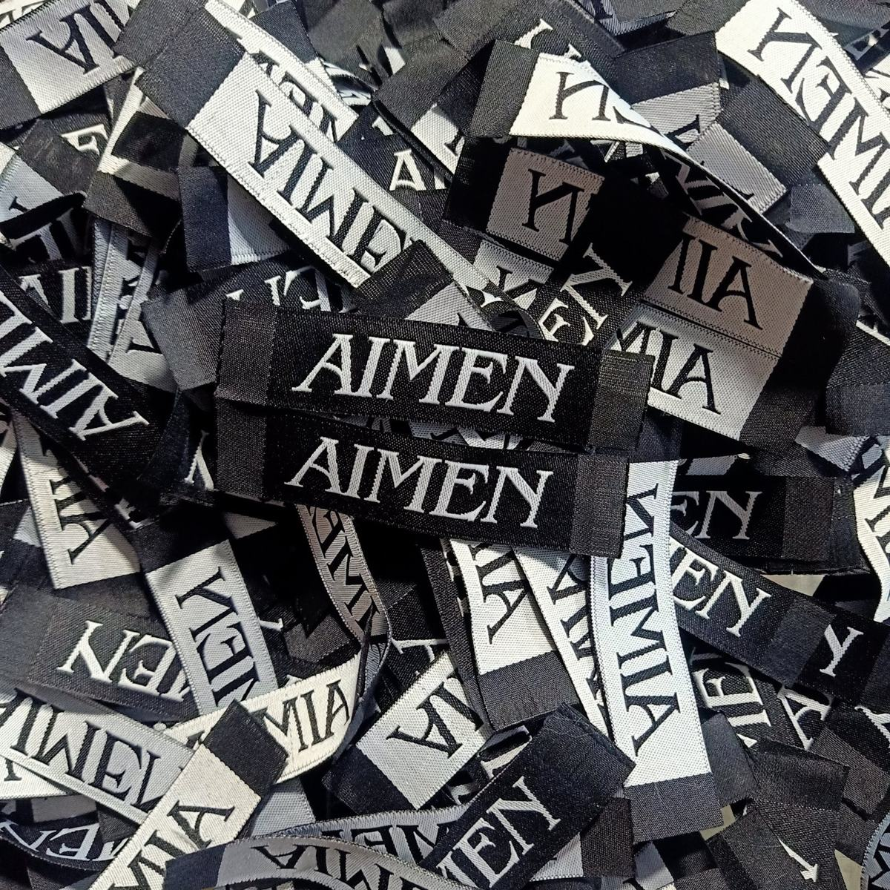
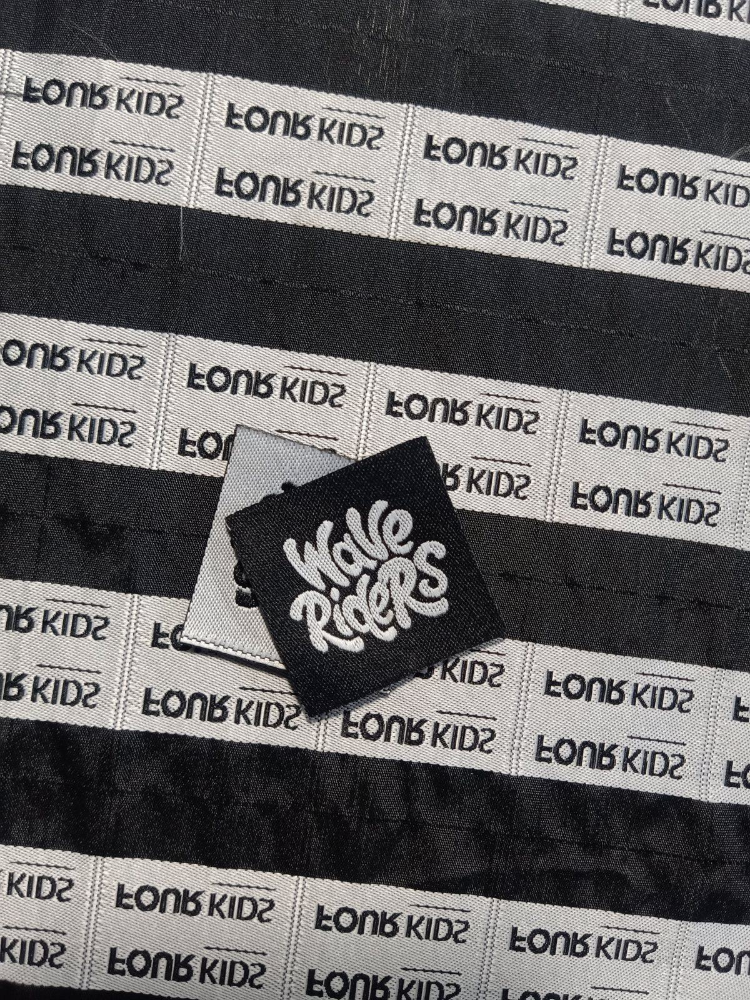
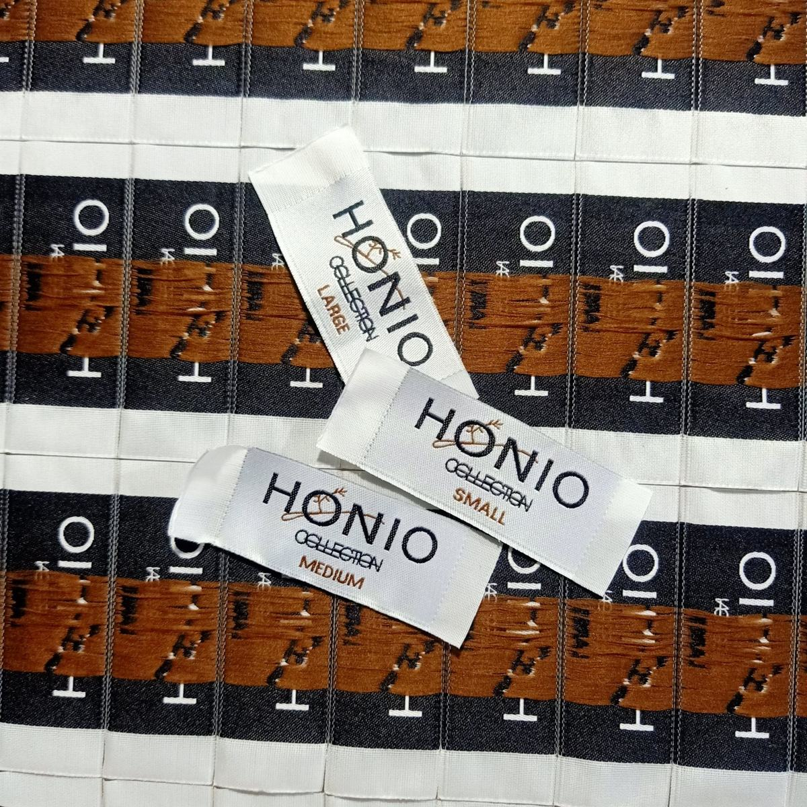
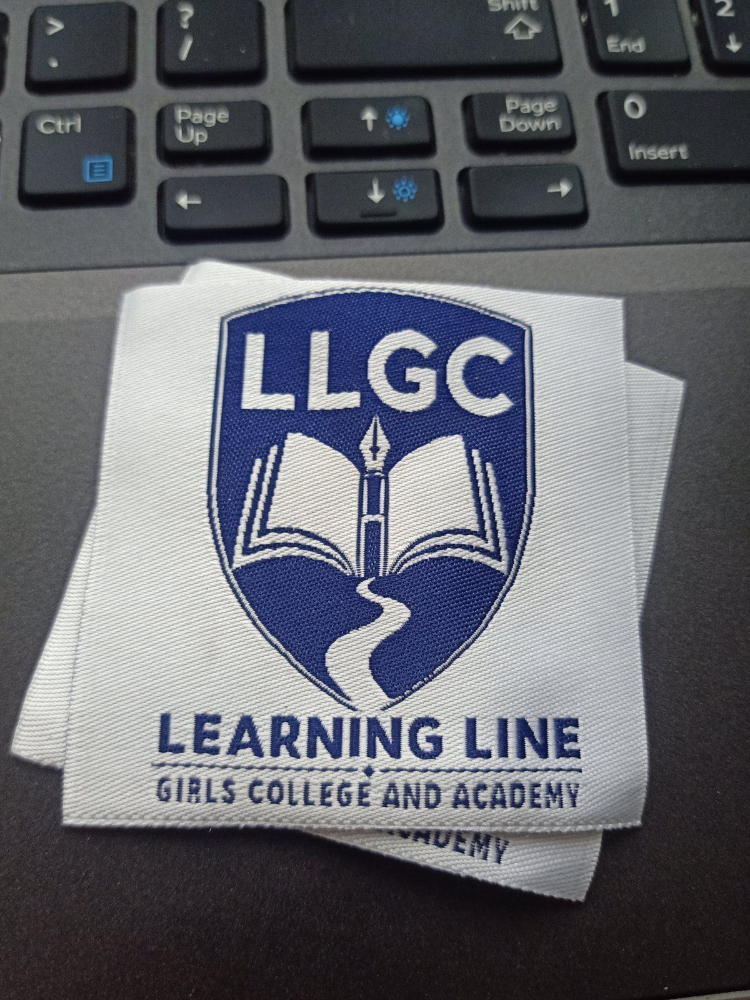

Brand labels
Your brand name woven into the neck or side seam of every piece you make — the label a customer sees first.
Best for: Clothing and fashion brands, boutiques, handmade labels
Get a quoteBrand labels, logo labels, size labels, care labels, hang tags and monograms — plus the fold styles and shapes that decide how each one is sewn in.
Most brands order two or three of these together so the set matches.

Your brand name woven into the neck or side seam of every piece you make — the label a customer sees first.
Best for: Clothing and fashion brands, boutiques, handmade labels
Get a quote
Your logo reproduced in thread. Fine detail, small type and multi-colour marks are all woven rather than printed.
Best for: Brands with an established logo or wordmark
Get a quote
Clean, consistent size markers — XS through XXL, numeric sizing, or your own size system.
Best for: Any brand running a full size range
Get a quoteWashing and care instructions woven to stay readable for the life of the garment, with care symbols where you need them.
Best for: Retail-ready garments and export orders
Get a quoteWoven tags that hang on the outside of the product — often the first thing a customer touches on the rail.
Best for: Retail display, gifting, premium packaging
Get a quote
Custom woven monograms and crests for uniforms, blazers and sportswear, matched to the school's own emblem.
Best for: Schools, academies and organisations
Get a quoteThe fold decides how a label is sewn in and how much of it a customer sees. If you’re not sure which one you need, tell us where the label is going and we’ll advise.
| Fold | What it is | Typically used for |
|---|---|---|
| Straight Cut (Flat) | No fold. The full label is visible and sewn flat — on all four sides or across the top and bottom. | Neck labels, patches, hang tags, side-seam tabs |
| Centre Fold | Folded in half across the middle. The label reads on the front and the back is hidden inside the seam. | Neck labels and side-seam brand labels |
| End Fold | Both short ends are folded under, leaving clean finished sides with no raw edges. | Neck labels, care labels, size labels |
| Mitre Fold | All four corners are mitred and folded under, giving a neat, tailored finish on every edge. | Premium brand labels and hang tags |
| Manhattan Fold | One end is folded over and the other remains open, giving a folded top edge with a raw bottom edge sewn into the seam. | Waistband labels and inside-hem labels |
No fold. The full label is visible and sewn flat — on all four sides or across the top and bottom.
Best for: Neck labels, patches, hang tags, side-seam tabs
Folded in half across the middle. The label reads on the front and the back is hidden inside the seam.
Best for: Neck labels and side-seam brand labels
Both short ends are folded under, leaving clean finished sides with no raw edges.
Best for: Neck labels, care labels, size labels
All four corners are mitred and folded under, giving a neat, tailored finish on every edge.
Best for: Premium brand labels and hang tags
One end is folded over and the other remains open, giving a folded top edge with a raw bottom edge sewn into the seam.
Best for: Waistband labels and inside-hem labels
Labels are made to your measurements rather than fixed sizes.
You choose the background and thread colours, and we match your brand colours as closely as the weaving process allows. A focused palette — generally around 10 to 12 thread colours — covers most logos and text cleanly. Send your artwork and we’ll tell you exactly how it translates into thread.
Colours are matched by thread reference. If you have Pantone, RAL or plain colour-name references, share them when you send your artwork. We’ll confirm the closest match before production begins.
Damask, satin or taffeta? Which fold? How do you prepare artwork, check quality and label a garment for the US, EU, UK, Canada, Australia and Japan? It is all in one guide.
Tell us what you're making and where the label goes. We'll tell you what works — and quote it free.